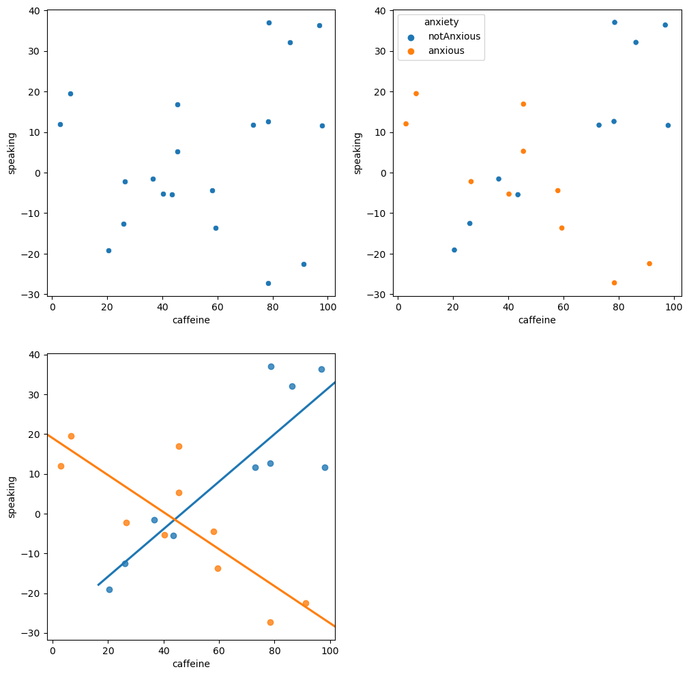

Chapter 14: The General Linear Model
Contents
Chapter 14: The General Linear Model#
import pandas as pd
import numpy as np
import matplotlib.pyplot as plt
import seaborn as sns
from scipy.stats import norm, t, binom, scoreatpercentile
import pingouin as pg
import matplotlib
import statsmodels.api as sm
import statsmodels.formula.api as smf
from sklearn.metrics import r2_score, mean_squared_error
from sklearn.model_selection import KFold
import rpy2.robjects as ro
from rpy2.robjects.packages import importr
from rpy2.robjects import pandas2ri
pandas2ri.activate()
from rpy2.robjects.conversion import localconverter
# import NHANES package
base = importr('NHANES')
%load_ext rpy2.ipython
with localconverter(ro.default_converter + pandas2ri.converter):
NHANES = ro.conversion.rpy2py(ro.r['NHANES'])
NHANES = NHANES.drop_duplicates(subset='ID')
NHANES_adult = NHANES.dropna(subset=['Weight']).query('Age > 17 and BPSysAve > 0')
rng = np.random.default_rng(1234567)
Figure 14.1#
# Data differ from book example because y values are random samples
betas = np.array([6, 5])
df = pd.DataFrame({'studyTime': np.array([2, 3, 5, 6, 6, 8, 10, 12]) / 3,
'priorClass': [0, 1, 1, 0, 1, 0, 1, 0]})
grade_intercept = 70
df['grade'] = df.values.dot(betas) + rng.normal(size=8, loc = grade_intercept, scale = 5)
fig = plt.figure(figsize=(6,6))
sns.scatterplot(data=df, x='studyTime', y='grade')
plt.xlabel('Study time (hours)')
plt.ylabel('Grade (percent)')
Text(0, 0.5, 'Grade (percent)')
Correlation test#
# compute correlation between grades and study time
corTestResult = pg.corr(df['studyTime'], df['grade'])
corTestResult
| n | r | CI95% | p-val | BF10 | power | |
|---|---|---|---|---|---|---|
| pearson | 8 | 0.742254 | [0.08, 0.95] | 0.034959 | 2.886 | 0.612544 |
Figure 14.2#
mod = smf.ols(formula='grade ~ studyTime', data=df)
res = mod.fit()
fig = plt.figure(figsize=(6,6))
plt.xlim([-0.5, 4.5])
sns.regplot(data=df, x='studyTime', y='grade', color='black',
line_kws={'color': 'blue'}, ci=None, truncate=False)
plt.xlabel('Study time (hours)')
plt.ylabel('Grade (percent)')
xmax = df.studyTime.max() * 1.1
plt.plot([2, 3], [res.params.dot(np.array([1, 2])), res.params.dot(np.array([1, 2]))], 'k', linestyle='dashed')
plt.plot([3, 3], [res.params.dot(np.array([1, 2])), res.params.dot(np.array([1, 3]))], 'k', linestyle='dashed')
plt.plot([0, xmax], [res.params['Intercept'], res.params['Intercept']], 'k:')
[<matplotlib.lines.Line2D at 0x7f24502bc7f0>]
Table 14.1#
nstudents = 100
readingScores = pd.DataFrame({'test1': rng.normal(100, 10, nstudents),
'test2': rng.normal(100, 10, nstudents)})
cutoff = scoreatpercentile(readingScores.test1, 25)
readingScores[readingScores.test1 < cutoff].mean()
test1 87.084873
test2 99.249985
dtype: float64
Linear model output#
print(res.summary())
OLS Regression Results
==============================================================================
Dep. Variable: grade R-squared: 0.551
Model: OLS Adj. R-squared: 0.476
Method: Least Squares F-statistic: 7.361
Date: Tue, 21 Feb 2023 Prob (F-statistic): 0.0350
Time: 16:14:56 Log-Likelihood: -25.157
No. Observations: 8 AIC: 54.31
Df Residuals: 6 BIC: 54.47
Df Model: 1
Covariance Type: nonrobust
==============================================================================
coef std err t P>|t| [0.025 0.975]
------------------------------------------------------------------------------
Intercept 75.3225 5.241 14.371 0.000 62.498 88.147
studyTime 5.9019 2.175 2.713 0.035 0.579 11.225
==============================================================================
Omnibus: 1.336 Durbin-Watson: 2.668
Prob(Omnibus): 0.513 Jarque-Bera (JB): 0.897
Skew: 0.672 Prob(JB): 0.639
Kurtosis: 2.060 Cond. No. 6.30
==============================================================================
Notes:
[1] Standard Errors assume that the covariance matrix of the errors is correctly specified.
/opt/conda/lib/python3.10/site-packages/scipy/stats/_stats_py.py:1736: UserWarning: kurtosistest only valid for n>=20 ... continuing anyway, n=8
warnings.warn("kurtosistest only valid for n>=20 ... continuing "
Linear regression output for study time and prior class#
mod2 = smf.ols(formula='grade ~ studyTime + priorClass', data=df)
res2 = mod2.fit()
print(res2.summary())
OLS Regression Results
==============================================================================
Dep. Variable: grade R-squared: 0.780
Model: OLS Adj. R-squared: 0.693
Method: Least Squares F-statistic: 8.889
Date: Tue, 21 Feb 2023 Prob (F-statistic): 0.0226
Time: 16:14:56 Log-Likelihood: -22.294
No. Observations: 8 AIC: 50.59
Df Residuals: 5 BIC: 50.83
Df Model: 2
Covariance Type: nonrobust
==============================================================================
coef std err t P>|t| [0.025 0.975]
------------------------------------------------------------------------------
Intercept 69.9340 4.655 15.024 0.000 57.969 81.899
studyTime 6.5119 1.687 3.860 0.012 2.175 10.849
priorClass 8.1336 3.557 2.287 0.071 -1.010 17.277
==============================================================================
Omnibus: 1.929 Durbin-Watson: 2.521
Prob(Omnibus): 0.381 Jarque-Bera (JB): 0.755
Skew: -0.126 Prob(JB): 0.686
Kurtosis: 1.517 Cond. No. 7.91
==============================================================================
Notes:
[1] Standard Errors assume that the covariance matrix of the errors is correctly specified.
/opt/conda/lib/python3.10/site-packages/scipy/stats/_stats_py.py:1736: UserWarning: kurtosistest only valid for n>=20 ... continuing anyway, n=8
warnings.warn("kurtosistest only valid for n>=20 ... continuing "
Figure 14.3#
fig = plt.figure(figsize=(6,6))
plt.xlim([-0.5, xmax])
sns.scatterplot(data=df, x='studyTime', y='grade', color='black', style='priorClass')
plt.xlabel('Study time (hours)')
plt.ylabel('Grade (percent)')
xmax = df.studyTime.max() * 1.1
plt.plot([0, xmax], [res2.params.dot(np.array([1, 0, 0])), res2.params.dot(np.array([1, xmax, 0]))], 'k')
plt.plot([0, xmax], [res2.params.dot(np.array([1, 0, 1])), res2.params.dot(np.array([1, xmax, 1]))], 'k', linestyle='dashed')
plt.plot([2, 2], [res2.params.dot(np.array([1, 2, 0])), res2.params.dot(np.array([1, 2, 1]))], 'k', linestyle='dotted')
[<matplotlib.lines.Line2D at 0x7f24502192d0>]
Figure 14.4#
fig, ax = plt.subplots(2, 2, figsize=(12,12))
df = pd.DataFrame({'group': [-1, 1] * 10,
'caffeine': rng.uniform(size=20) * 100})
df['speaking'] = 0.5 * df.caffeine * -df.group + 20 * df.group + rng.normal(size=20) * 10
df['anxiety'] = ['anxious' if i == 1 else 'notAnxious' for i in df.group]
# perform linear regression with caffeine as independent variable
res_caf = smf.ols(formula='speaking ~ caffeine', data=df).fit()
# compute linear regression adding anxiety to model
res_caf_anx = smf.ols(formula='speaking ~ caffeine + anxiety', data=df).fit()
# compute linear regression including caffeine X anxiety interaction
res_caf_anx_int = smf.ols(formula='speaking ~ caffeine * anxiety', data=df).fit()
sns.scatterplot(data=df, x='caffeine', y='speaking', ax=ax[0][0])
sns.scatterplot(data=df, x='caffeine', y='speaking', hue='anxiety', ax=ax[0][1])
sns.regplot(data=df.query('group == -1'), x='caffeine', y='speaking', ax=ax[1][0], ci=None, truncate=False)
sns.regplot(data=df.query('group == 1'), x='caffeine', y='speaking', ax=ax[1][0], ci=None, truncate=False)
ax[1][1].set_visible(False)

Linear model for caffeine#
print(res_caf.summary())
OLS Regression Results
==============================================================================
Dep. Variable: speaking R-squared: 0.051
Model: OLS Adj. R-squared: -0.001
Method: Least Squares F-statistic: 0.9718
Date: Tue, 21 Feb 2023 Prob (F-statistic): 0.337
Time: 16:14:57 Log-Likelihood: -86.007
No. Observations: 20 AIC: 176.0
Df Residuals: 18 BIC: 178.0
Df Model: 1
Covariance Type: nonrobust
==============================================================================
coef std err t P>|t| [0.025 0.975]
------------------------------------------------------------------------------
Intercept -3.7625 8.994 -0.418 0.681 -22.659 15.134
caffeine 0.1436 0.146 0.986 0.337 -0.162 0.450
==============================================================================
Omnibus: 0.328 Durbin-Watson: 2.223
Prob(Omnibus): 0.849 Jarque-Bera (JB): 0.488
Skew: -0.133 Prob(JB): 0.784
Kurtosis: 2.283 Cond. No. 132.
==============================================================================
Notes:
[1] Standard Errors assume that the covariance matrix of the errors is correctly specified.
Linear model result for caffeine and anxiety#
print(res_caf_anx.summary())
OLS Regression Results
==============================================================================
Dep. Variable: speaking R-squared: 0.131
Model: OLS Adj. R-squared: 0.029
Method: Least Squares F-statistic: 1.283
Date: Tue, 21 Feb 2023 Prob (F-statistic): 0.303
Time: 16:14:57 Log-Likelihood: -85.127
No. Observations: 20 AIC: 176.3
Df Residuals: 17 BIC: 179.2
Df Model: 2
Covariance Type: nonrobust
=========================================================================================
coef std err t P>|t| [0.025 0.975]
-----------------------------------------------------------------------------------------
Intercept -5.9466 9.027 -0.659 0.519 -24.992 13.099
anxiety[T.notAnxious] 10.9220 8.732 1.251 0.228 -7.501 29.345
caffeine 0.0836 0.151 0.552 0.588 -0.236 0.403
==============================================================================
Omnibus: 2.592 Durbin-Watson: 2.082
Prob(Omnibus): 0.274 Jarque-Bera (JB): 1.151
Skew: -0.004 Prob(JB): 0.562
Kurtosis: 1.825 Cond. No. 145.
==============================================================================
Notes:
[1] Standard Errors assume that the covariance matrix of the errors is correctly specified.
Linear model result for interaction#
print(res_caf_anx_int.summary())
OLS Regression Results
==============================================================================
Dep. Variable: speaking R-squared: 0.761
Model: OLS Adj. R-squared: 0.716
Method: Least Squares F-statistic: 16.99
Date: Tue, 21 Feb 2023 Prob (F-statistic): 3.14e-05
Time: 16:14:57 Log-Likelihood: -72.214
No. Observations: 20 AIC: 152.4
Df Residuals: 16 BIC: 156.4
Df Model: 3
Covariance Type: nonrobust
==================================================================================================
coef std err t P>|t| [0.025 0.975]
--------------------------------------------------------------------------------------------------
Intercept 18.9944 6.209 3.059 0.007 5.833 32.156
anxiety[T.notAnxious] -46.7564 10.056 -4.650 0.000 -68.073 -25.439
caffeine -0.4655 0.118 -3.959 0.001 -0.715 -0.216
caffeine:anxiety[T.notAnxious] 1.0625 0.164 6.496 0.000 0.716 1.409
==============================================================================
Omnibus: 1.060 Durbin-Watson: 2.686
Prob(Omnibus): 0.589 Jarque-Bera (JB): 0.367
Skew: 0.328 Prob(JB): 0.833
Kurtosis: 3.103 Cond. No. 367.
==============================================================================
Notes:
[1] Standard Errors assume that the covariance matrix of the errors is correctly specified.
Analysis of variance result#
print(sm.stats.anova_lm(res_caf_anx, res_caf_anx_int))
df_resid ssr df_diff ss_diff F Pr(>F)
0 17.0 5828.534062 0.0 NaN NaN NaN
1 16.0 1602.468696 1.0 4226.065367 42.195549 0.000007
Figure 14.5#
qq_df = pd.DataFrame({'norm': rng.normal(size=100),
'unif': rng.uniform(size=100)})
fig, ax = plt.subplots(1, 2, figsize=(12,6))
_ = sm.qqplot(qq_df['norm'], line ='45', ax=ax[0])
ax[0].set_title('Normal data')
_ = sm.qqplot(qq_df['unif'], line ='45', ax=ax[1])
ax[1].set_title('Non-normal data')
Text(0.5, 1.0, 'Non-normal data')
Table 14.2#
NHANES_child = NHANES.query('Age < 18')[['Height', 'Weight', 'TVHrsDayChild', 'HHIncomeMid', 'CompHrsDayChild', 'Age']].dropna()
# create function to sample data and compute regression on in-sample and out-of-sample data
def get_sample_predictions(sample_size=250, shuffle = False):
# generate a sample from NHANES
orig_sample = NHANES_child.sample(sample_size)
# if shuffle is turned on, then randomly shuffle the weight variable
if shuffle:
orig_sample.Weight = rng.permuted(orig_sample.Weight)
# compute the regression line for Weight, as a function of several
# other variables (with all possible interactions between variables)
heightRegressOrig = smf.ols(
formula='Weight ~ Height * TVHrsDayChild * CompHrsDayChild * HHIncomeMid * Age',
data=orig_sample).fit()
# compute the predictions
pred_orig = heightRegressOrig.predict(orig_sample)
# create a new sample from the same population
new_sample = NHANES_child.sample(sample_size)
# use the model fom the original sample to predict the
# Weight values for the new sample
pred_new = heightRegressOrig.predict(new_sample)
# return r-squared and rmse for original and new data
return([
r2_score(pred_orig, orig_sample.Weight),
r2_score(pred_new, new_sample.Weight),
np.sqrt(mean_squared_error(pred_orig, orig_sample.Weight)),
np.sqrt(mean_squared_error(pred_new, new_sample.Weight))])
# implement the function
nruns = 100
sim_results = pd.DataFrame([get_sample_predictions() for i in range(nruns)],
columns=['r2_orig', 'r2_new', 'RMSE_orig', 'RMSE_new'])
sim_results_shuffled = pd.DataFrame([get_sample_predictions(shuffle=True) for i in range(nruns)],
columns=['r2_orig', 'r2_new', 'RMSE_orig', 'RMSE_new'])
sim_results_combined = pd.DataFrame(sim_results.mean(), columns=['True data'])
sim_results_combined['Shuffled data'] = (sim_results_shuffled.mean())
sim_results_combined
| True data | Shuffled data | |
|---|---|---|
| r2_orig | 0.491430 | -1.757720 |
| r2_new | 0.486197 | -0.947116 |
| RMSE_orig | 20.080101 | 32.493539 |
| RMSE_new | 20.208347 | 28.604066 |
Table 14.3#
# create a function to run cross-validation
# returns the metrics for the out-of-sample prediction
def compute_cv(df, sampleSize = 250, nfolds = 6):
kf = KFold(n_splits=nfolds, shuffle=True)
orig_sample = df.sample(sampleSize)
fullsample_model = smf.ols(
formula='Weight ~ Height * TVHrsDayChild * CompHrsDayChild * HHIncomeMid * Age',
data=orig_sample).fit()
new_sample = df.sample(sampleSize)
pred = np.zeros(orig_sample.shape[0]) * np.nan
for train_index, test_index in kf.split(orig_sample):
train_df = orig_sample.iloc[train_index, :]
test_df = orig_sample.iloc[test_index, :]
train_model = smf.ols(
formula='Weight ~ Height * TVHrsDayChild * CompHrsDayChild * HHIncomeMid * Age',
data=train_df).fit()
pred[test_index] = train_model.predict(test_df)
results = [
# full original data
np.sqrt(mean_squared_error(fullsample_model.predict(), orig_sample.Weight)),
r2_score(fullsample_model.predict(), orig_sample.Weight),
# new data
np.sqrt(mean_squared_error(fullsample_model.predict(new_sample), new_sample.Weight)),
r2_score(fullsample_model.predict(new_sample), new_sample.Weight),
# CV
np.sqrt(mean_squared_error(pred, orig_sample.Weight)),
r2_score(pred, orig_sample.Weight)]
return(results)
nruns = 1000
sim_results = pd.DataFrame([compute_cv(NHANES_child) for i in range(nruns)],
columns=['RMSE_insample', 'R2_insample',
'RMSE_newdata', 'R2_newdata',
'RMSE_CV', 'R2_CV'])
sim_results.mean()
---------------------------------------------------------------------------
KeyboardInterrupt Traceback (most recent call last)
Cell In[16], line 34
31 return(results)
33 nruns = 1000
---> 34 sim_results = pd.DataFrame([compute_cv(NHANES_child) for i in range(nruns)],
35 columns=['RMSE_insample', 'R2_insample',
36 'RMSE_newdata', 'R2_newdata',
37 'RMSE_CV', 'R2_CV'])
38 sim_results.mean()
Cell In[16], line 34, in <listcomp>(.0)
31 return(results)
33 nruns = 1000
---> 34 sim_results = pd.DataFrame([compute_cv(NHANES_child) for i in range(nruns)],
35 columns=['RMSE_insample', 'R2_insample',
36 'RMSE_newdata', 'R2_newdata',
37 'RMSE_CV', 'R2_CV'])
38 sim_results.mean()
Cell In[16], line 16, in compute_cv(df, sampleSize, nfolds)
14 train_df = orig_sample.iloc[train_index, :]
15 test_df = orig_sample.iloc[test_index, :]
---> 16 train_model = smf.ols(
17 formula='Weight ~ Height * TVHrsDayChild * CompHrsDayChild * HHIncomeMid * Age',
18 data=train_df).fit()
19 pred[test_index] = train_model.predict(test_df)
21 results = [
22 # full original data
23 np.sqrt(mean_squared_error(fullsample_model.predict(), orig_sample.Weight)),
(...)
29 np.sqrt(mean_squared_error(pred, orig_sample.Weight)),
30 r2_score(pred, orig_sample.Weight)]
File /opt/conda/lib/python3.10/site-packages/statsmodels/base/model.py:200, in Model.from_formula(cls, formula, data, subset, drop_cols, *args, **kwargs)
197 if missing == 'none': # with patsy it's drop or raise. let's raise.
198 missing = 'raise'
--> 200 tmp = handle_formula_data(data, None, formula, depth=eval_env,
201 missing=missing)
202 ((endog, exog), missing_idx, design_info) = tmp
203 max_endog = cls._formula_max_endog
File /opt/conda/lib/python3.10/site-packages/statsmodels/formula/formulatools.py:63, in handle_formula_data(Y, X, formula, depth, missing)
61 else:
62 if data_util._is_using_pandas(Y, None):
---> 63 result = dmatrices(formula, Y, depth, return_type='dataframe',
64 NA_action=na_action)
65 else:
66 result = dmatrices(formula, Y, depth, return_type='dataframe',
67 NA_action=na_action)
File /opt/conda/lib/python3.10/site-packages/patsy/highlevel.py:309, in dmatrices(formula_like, data, eval_env, NA_action, return_type)
299 """Construct two design matrices given a formula_like and data.
300
301 This function is identical to :func:`dmatrix`, except that it requires
(...)
306 See :func:`dmatrix` for details.
307 """
308 eval_env = EvalEnvironment.capture(eval_env, reference=1)
--> 309 (lhs, rhs) = _do_highlevel_design(formula_like, data, eval_env,
310 NA_action, return_type)
311 if lhs.shape[1] == 0:
312 raise PatsyError("model is missing required outcome variables")
File /opt/conda/lib/python3.10/site-packages/patsy/highlevel.py:167, in _do_highlevel_design(formula_like, data, eval_env, NA_action, return_type)
164 design_infos = _try_incr_builders(formula_like, data_iter_maker, eval_env,
165 NA_action)
166 if design_infos is not None:
--> 167 return build_design_matrices(design_infos, data,
168 NA_action=NA_action,
169 return_type=return_type)
170 else:
171 # No builders, but maybe we can still get matrices
172 if isinstance(formula_like, tuple):
File /opt/conda/lib/python3.10/site-packages/patsy/build.py:888, in build_design_matrices(design_infos, data, NA_action, return_type, dtype)
886 for factor_info in six.itervalues(design_info.factor_infos):
887 if factor_info not in factor_info_to_values:
--> 888 value, is_NA = _eval_factor(factor_info, data, NA_action)
889 factor_info_to_isNAs[factor_info] = is_NA
890 # value may now be a Series, DataFrame, or ndarray
File /opt/conda/lib/python3.10/site-packages/patsy/build.py:66, in _eval_factor(factor_info, data, NA_action)
64 # Returns either a 2d ndarray, or a DataFrame, plus is_NA mask
65 if factor_info.type == "numerical":
---> 66 result = atleast_2d_column_default(result, preserve_pandas=True)
67 _max_allowed_dim(2, result, factor)
68 if result.shape[1] != factor_info.num_columns:
File /opt/conda/lib/python3.10/site-packages/patsy/util.py:162, in atleast_2d_column_default(a, preserve_pandas)
160 if preserve_pandas and have_pandas:
161 if isinstance(a, pandas.Series):
--> 162 return pandas.DataFrame(a)
163 elif isinstance(a, pandas.DataFrame):
164 return a
File /opt/conda/lib/python3.10/site-packages/pandas/core/frame.py:712, in DataFrame.__init__(self, data, index, columns, dtype, copy)
702 mgr = rec_array_to_mgr(
703 data,
704 index,
(...)
708 typ=manager,
709 )
710 elif getattr(data, "name", None) is not None:
711 # i.e. Series/Index with non-None name
--> 712 mgr = dict_to_mgr(
713 # error: Item "ndarray" of "Union[ndarray, Series, Index]" has no
714 # attribute "name"
715 {data.name: data}, # type: ignore[union-attr]
716 index,
717 columns,
718 dtype=dtype,
719 typ=manager,
720 )
721 else:
722 mgr = ndarray_to_mgr(
723 data,
724 index,
(...)
728 typ=manager,
729 )
File /opt/conda/lib/python3.10/site-packages/pandas/core/internals/construction.py:493, in dict_to_mgr(data, index, columns, dtype, typ, copy)
489 else:
490 # dtype check to exclude e.g. range objects, scalars
491 arrays = [x.copy() if hasattr(x, "dtype") else x for x in arrays]
--> 493 return arrays_to_mgr(arrays, columns, index, dtype=dtype, typ=typ, consolidate=copy)
File /opt/conda/lib/python3.10/site-packages/pandas/core/internals/construction.py:118, in arrays_to_mgr(arrays, columns, index, dtype, verify_integrity, typ, consolidate)
115 if verify_integrity:
116 # figure out the index, if necessary
117 if index is None:
--> 118 index = _extract_index(arrays)
119 else:
120 index = ensure_index(index)
File /opt/conda/lib/python3.10/site-packages/pandas/core/internals/construction.py:659, in _extract_index(data)
656 raise ValueError("If using all scalar values, you must pass an index")
658 elif have_series:
--> 659 index = union_indexes(indexes)
660 elif have_dicts:
661 index = union_indexes(indexes, sort=False)
File /opt/conda/lib/python3.10/site-packages/pandas/core/indexes/api.py:204, in union_indexes(indexes, sort)
199 index = Index(array_sorted, name=index.name, dtype=index.dtype)
201 return index
--> 204 def union_indexes(indexes, sort: bool | None = True) -> Index:
205 """
206 Return the union of indexes.
207
(...)
218 Index
219 """
220 if len(indexes) == 0:
KeyboardInterrupt:
Table 14.4#
df = pd.DataFrame({'studyTime': np.array([2, 3, 5, 6, 6, 8, 10, 12]) / 3,
'priorClass': [0, 1, 1, 0, 1, 0, 1, 0]})
df['grade'] = df.values.dot(betas) + rng.normal(size=8, loc = 70, scale = 5)
df.values
array([[ 0.66666667, 0. , 81.40234345],
[ 1. , 1. , 78.49643294],
[ 1.66666667, 1. , 77.8962827 ],
[ 2. , 0. , 79.66479948],
[ 2. , 1. , 86.82553731],
[ 2.66666667, 0. , 88.18580407],
[ 3.33333333, 1. , 100.96621238],
[ 4. , 0. , 99.59806513]])
Table 14.5#
# compute beta estimates using linear algebra
#create Y variable 8 x 1 matrix
Y = df.grade
#create X variable 8 x 2 matrix
X = np.zeros((df.shape[0], 2))
#assign studyTime values to first column in X matrix
X[:, 1] = df.studyTime.values - df.studyTime.values.mean()
#assign constant of 1 to second column in X matrix
X[:, 0] = 1
# compute inverse of X using ginv()
# %*% is the R matrix multiplication operator
beta_hat = np.linalg.inv(X.T.dot(X)).dot(X.T).dot(Y.values) #multiple the inverse of X by Y
beta_df = pd.DataFrame({'True': [grade_intercept, betas[0]],
'Estimated': beta_hat}, index=['intercept', 'grade'])
beta_df
| True | Estimated | |
|---|---|---|
| intercept | 70 | 86.629435 |
| grade | 6 | 7.211706 |
# confirm results same as statsmodels
mod2 = sm.OLS(Y, X)
res2 = mod2.fit()
print(res2.summary())
OLS Regression Results
==============================================================================
Dep. Variable: grade R-squared: 0.778
Model: OLS Adj. R-squared: 0.741
Method: Least Squares F-statistic: 20.99
Date: Tue, 21 Feb 2023 Prob (F-statistic): 0.00376
Time: 07:00:17 Log-Likelihood: -22.569
No. Observations: 8 AIC: 49.14
Df Residuals: 6 BIC: 49.30
Df Model: 1
Covariance Type: nonrobust
==============================================================================
coef std err t P>|t| [0.025 0.975]
------------------------------------------------------------------------------
const 86.6294 1.659 52.213 0.000 82.570 90.689
x1 7.2117 1.574 4.582 0.004 3.360 11.063
==============================================================================
Omnibus: 0.461 Durbin-Watson: 1.686
Prob(Omnibus): 0.794 Jarque-Bera (JB): 0.458
Skew: 0.094 Prob(JB): 0.795
Kurtosis: 1.843 Cond. No. 1.05
==============================================================================
Notes:
[1] Standard Errors assume that the covariance matrix of the errors is correctly specified.
/home/poldrack/miniconda3/envs/py39/lib/python3.9/site-packages/scipy/stats/_stats_py.py:1736: UserWarning: kurtosistest only valid for n>=20 ... continuing anyway, n=8
warnings.warn("kurtosistest only valid for n>=20 ... continuing "